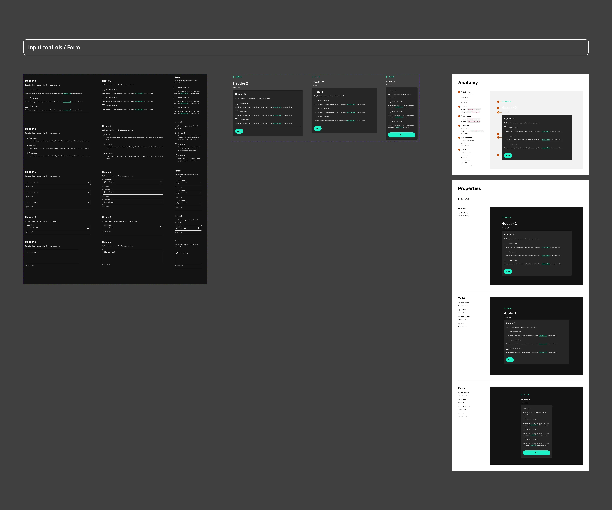

The designs of User profile first view before and after the project

Card sorting results

Information Architecture diagram
A snippet of Low fidelity diagrams

Documented A/B test results

HTML prototype

A snippet from the Figma prototype with new navigation

"Your account" screen to illustrate some updates in the UI of the user profile
A snippet from the file with the specifications from the new set of components

A snippet from the Figma prototype of the final proposal

The new design of the first view
The new design of the "Your account" section

The new design of the "Your payments" section